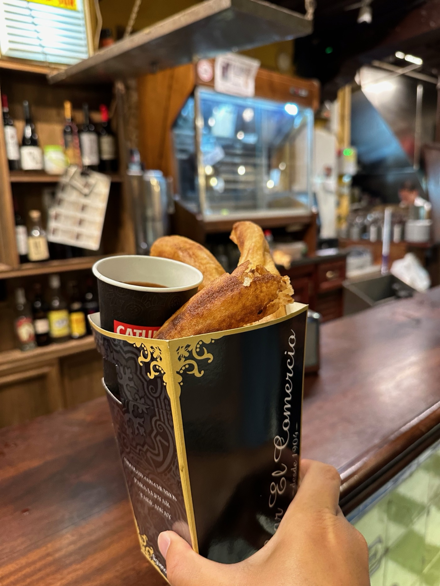
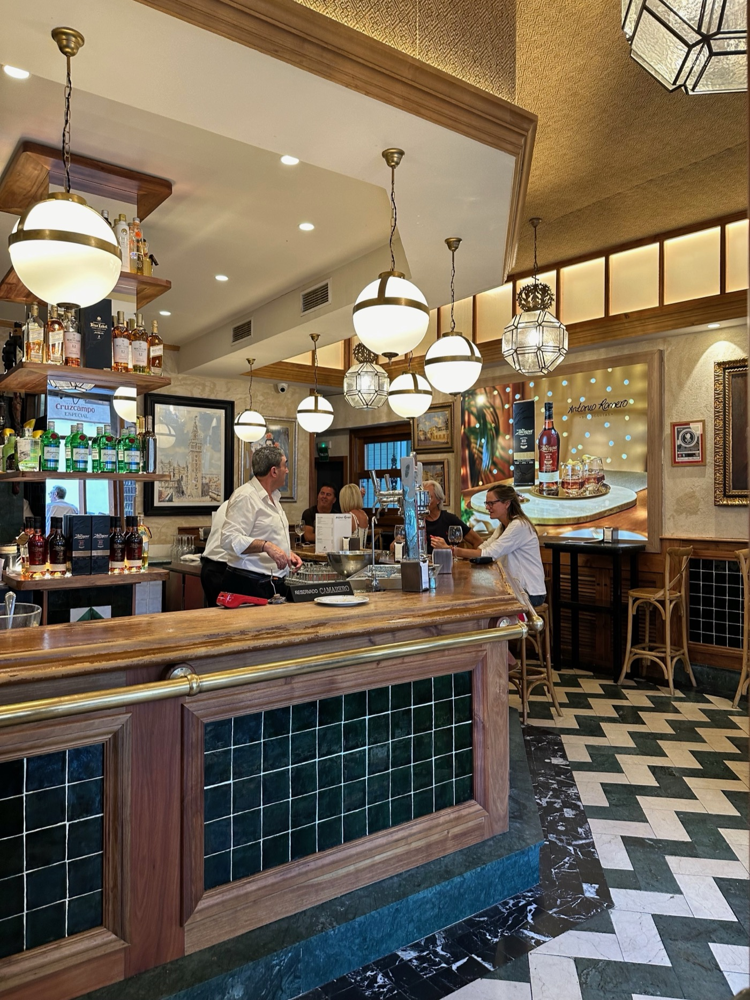

Articles / Urban Quality Assessment
Measuring what we care about through images, notes, and digital tools

This article asks how digital observation can remain human: not only counting activity, but noticing texture, use, posture, and the qualities that make a place feel open or closed.
The problem with thin metrics
Many urban evaluations flatten experience into numbers alone. Footfall, dwell time, and occupancy can be useful, but they often miss the specific reasons people feel at ease or pushed away.
Digital observation becomes meaningful when images, notes, timestamps, and environmental readings are combined into a thicker archive. It is not only about counting presence, but understanding what kind of presence a place makes possible.
How image-based records become evidence
Photographs carry material clues that spreadsheets cannot: the angle of a doorway, how lighting shapes arrival, the distance between bodies, or the softness of an edge where people choose to pause. A short field note next to that image often reveals more than a large database without context.
Seen this way, digital tools are not replacements for situated judgment. They are supports for careful noticing, helping the archive stay searchable and comparable across time.


Toward a more useful archive
A useful observation archive should be elegant enough to browse and specific enough to reuse. That is why the Hub treats each note as a small editorial object rather than a raw file dump.
The goal is to create material that can later inform design direction, research framing, and decision-making without losing the original texture of the place being observed.